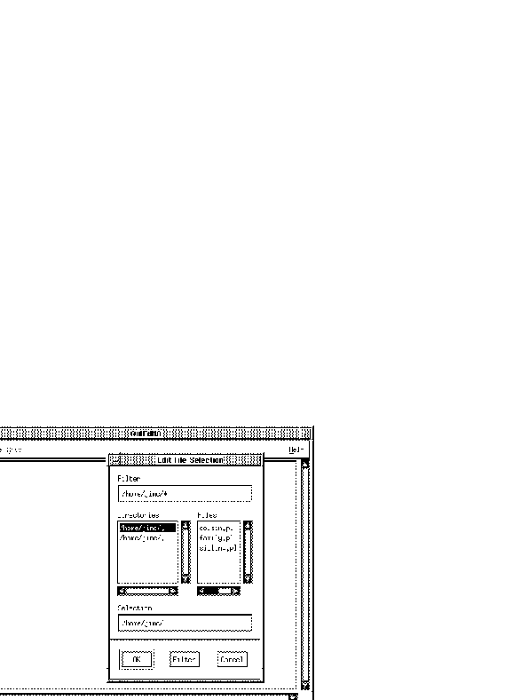

An edit window is displayed by selecting the Edit... option of
the File pulldown in the main window or the Edit option of the
File pulldown in the debugger main window. See qui-mai-mai-fil
for more information. The following figure shows an edit window before a file is loaded.
